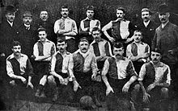

Манчестер Юнайтед
Зміст
Історія
Ранні роки (1878—1945)
Клуб «Манчестер Юнайтед», був створений в 1878 році під назвою «Ньютон-Гіт, Ланкаширські і Йоркширські залізниці». У 1892 році його прийняли до складу Футбольної ліги Англії (через 4 роки після її створення). На початку 20-го століття фінансові справи клубу йшли не найкращим чином і до 1902 року «Ньютон-Гіт» був на межі банкрутства. В ролі рятівника виступив великий місцевий підприємець Джон Девіс, який заплатив борги клубу і змінив його назву на «Манчестер Юнайтед». Варто відзначити ім'я першого, по суті, тренера і директора «МЮ» в одній особі — ним став Ернест Мангналл. Саме при ньому «Юнайтед» вийшов у Перший дивізіон, і саме його старання призвели до того, що в кінці 1906 року склад клубу поповнив один з найсильніших футболістів чемпіонату — валлієць Біллі Мередіт, гравець, між іншим, «Манчестер Сіті». Невдовзі прийшли й перші титули — чемпіонство і Суперкубок в 1908 році та Кубок Англії роком пізніше. У наступному році команда переїхала з Бенк-стріт у район «Олд-Траффорд». У 1911 році «МЮ» знову став першим у чемпіонаті Англії. Той сезон запам'ятався ще й тим, що в матчі за Суперкубок Англії «МЮ» здолав «Свіндон Таун» з рахунком 8:4, а найкращий бомбардир манкуніанців[6] Гералд Гелс забив 6 м'ячів.
Період, що передував Першій Світовій війні, нічим хорошим для «МЮ» не запам'ятався — Мангналл пішов у «Манчестер Сіті», результати матчів не вражали, а сама команда перебувала в нижній частині турнірної таблиці. На час війни Футбольна ліга припинила своє існування, а до моменту відновлення чемпіонату в сезоні 1919-20 у складі «Юнайтед» не було вже майже ні одного чемпіона 1911 року. Біллі Мередіт ще значився в клубі, але кар'єра його підходила до завершення. 1920-30-ті роки — одна з найсумніших сторінок в історії «МЮ». Курсування між Першим і Другим дивізіонами, падіння відвідуваності, зменшення фінансування (ангел-хоронитель клубу Джон Девіс помер у 1927 році) — ось основні тенденції міжвоєнної епохи в історії «МЮ». Дна манкуніанці досягли в сезоні 1933-34, коли лише в останньому турі, обігравши «Міллволл», ледь уникли вильоту в Третій дивізіон. У ті ж самі дні закляті вороги з «Сіті» узяли Кубок Англії, а на полі у складі «міщан» був шотландець, на ім'я Метт Басбі. Здійснивши ще кілька вояжів між Першим і Другим дивізіонами, «МЮ» зустрів Другу Світову війну в когорті найсильніших. За час війни (чемпіонат було призупинено) «Юнайтед» фактично втратив стадіон, зруйнований під час бомбардувань, однак отримав нового тренера — Метта Басбі.

Роки з Басбі (1945—1969)

До Другої світової війни Метт Басбі, що народився в містечку Орбістон графства Ланкашир, грав у «Манчестер Сіті» і в «Ліверпулі», провів кілька матчів за збірну Шотландії на позиції крайнього півзахисника. Ще бувши гравцем, він виявив схильність до тренерської роботи, і відразу після війни Басбі запропонували місце помічника тренера в «Ліверпулі». Проте 36-річний Метт вважав за краще очолити «Манчестер Юнайтед», що зазнав поразки. Це трапилося в лютому 1945 року. У попередні десятиліття цей клуб не хапав зірок з неба. Чемпіоном Англії був лише двічі, і останній раз у 1911 році. Один-єдиний раз виграв Кубок Англії — в 1909 році. Війна завдала «Манчестеру» величезної шкоди: стадіон «Олд-Траффорд» був майже цілком зруйнований бомбардуванням, футболістам доводилося грати на чужому стадіоні «Мейн Роуд». Клубна каса була порожня, зате на клубі висів борг у п'ятнадцять тисяч фунтів стерлінгів — на ті часи дуже велика сума. Засукавши рукава, Метт Басбі взявся за роботу.
Сер Метт Басбі став головним тренером клубу «Манчестер Юнайтед» з 1945 року. Мабуть, найважливішою якістю цієї людини було вміння розбиратися в людях і згуртовувати навколо себе тих, на кого він цілковито покладався. Першою знахідкою Басбі став валлієць Джим Мерфі, колишній футболіст, що став помічником головного тренера «Манчестера» і його правою рукою. Разом з тим Басбі вмів вимагати й домагатися беззаперечного виконання своїх розпоряджень. Зовні він міг здатися суворою, навіть грубуватою людиною, однак разом з тим завжди був для своїх футболістів — тих, у кому бачив однодумців і людей, відданих клубу, — турботливим опікуном.
У «Манчестері» в ту пору були непогані гравці — захисники Джон Кері, Джон Астон, Аленбі Чілтон, форварди Стен Пірсон, Чарлз Міттон, Джек Роулі. Однак клуб явно мав потребу в посиленні й відпрацюванні командних дій. Басбі вимагав від футболістів суворої й самовідданої гри на своїх місцях, зіграності ліній захисту, півзахисту та нападу і взаємного підстрахування. Жодних особливих тактичних новинок він не винаходив, команда грала за класичною схемою «дубль ве», але Басбі вмів максимально використовувати можливості кожного футболіста й експериментував, пробуючи його на різних позиціях.
Однак найбільше Басбі піклувався про посилення лінії атаки, добиваючись максимально швидкого переведення м'яча до чужого штрафного майданчика. Важливого значення він надавав і тому, щоб команда показувала яскравий, красивий футбол, який захоплює глядачів. Про цей бік великої гри якось він висловився так: «Коли грають першокласні команди — футбол чудове видовище. Я люблю його драму, відшліфовану майстерність гри, її ретельно налагоджений ритм з додаванням аромату контрасту стилів. Його великі ігри, для мене, у всякому разі, ні з чим не порівняти у світі спорту. Я відчуваю відчуття роману, подиву і таємниці, краси та поезії».
Клопітка робота Метта Басбі з відпрацювання командою гостроатакувальної гри досить швидко почала приносити плоди. Вже в 1947 році «Манчестер Юнайтед» став віцечемпіоном, пропустивши вперед «Ліверпуль». У наступні два сезони він знову опинявся другим, а в 1948 році завоював Кубок Англії, вигравши у фіналі у «Блекпула» — 4:2. Успіхи дали змогу відновити стадіон «Олд-Траффорд», розрахуватися з боргами й навіть отримати солідний прибуток. Але Метт Басбі заглядав далеко в майбутнє, для чого реорганізував клубну молодіжну футбольну школу й налагодив масштабну селекційну роботу. Скаути «Манчестера» роз'їжджали по всій Англії в пошуках юних футбольних талантів. Результати виявилися блискучими — в 1952 році «Манчестер Юнайтед» став чемпіоном, а до середини 50-х років Басбі вдалось створити по-справжньому великий клуб, зібравши чудовий ансамбль дивовижно зіграних молодих футболістів.
Серед них були Бобі Чарлтон, Едді Колман, Девід Пегг, Томмі Тейлор і юний форвард Данкан Едвардс. Незабаром молоду команду «Манчестер Юнайтед» вже називали не інакше, як «хлопчики Басбі». Ця молода команда з найсильнішою лінією атаки азартно, зухвало і весело увірвалася в еліту англійського футболу, і, здавалося, жодний суперник їй не страшний. У 1956 і 1957 роках «Манчестер» двічі поспіль був чемпіоном Англії. У 1957 році міг виграти й Кубок Англії, проте несподівано програв у фіналі «Астон Віллі» — 1:2.
У 1957 році «Манчестер» настільки ж зухвало увірвався і в розіграш Кубка європейських чемпіонів, дійшовши до півфіналу, де все-таки поступився великому мадридському «Реалу», який у ті роки вигравав головний європейський клубний турнір п'ять разів поспіль. Але в 1958 році «Манчестер Юнайтед» знову вийшов у півфінал Кубка чемпіонів, перемігши за сумою двох матчів белградську «Црвену Звезду».
6 лютого 1958, коли клуб повертався до Англії з Белграда після гри з «Црвеною Звездою», сталася трагедія. Літак, на якому летіли футболісти, зробивши зупинку в Мюнхені для дозаправлення, після зльоту впав на землю. У катастрофі загинули 28 пасажирів, серед них були 8 «хлопчиків Басбі», в тому числі й Данкан Едвардс, що подавав великі надії, 3 керівники клубу і 8 журналістів, які супроводжували команду на гру. Одним із журналістів був відомий Френк Свіфт, колишній воротар збірної Англії і клубу «Манчестер Сіті». Решті футболістів судилося вціліти, сам же Метт Басбі був важко поранений, переніс кілька операцій і довго відновлювався. Після трагедії він ще тривалий час боявся літати, і вперше зважився піднятися в повітря, лише добряче напившись перед польотом.
За примхою долі в літаку, що зазнав у Мюнхені катастрофи, не було помічника Басбі Джима Мерфі, який одночасно був тренером збірної Уельсу і саме в ті дні працював з валлійською командою. Мерфі й керував «Манчестером», поки лікувався Басбі. Знекровлена команда змогла, однак, дійти до фіналу Кубка Англії, але програла «Болтону» — 0:2. На основі цих подій було знято фільм.
Кілька років після цього «Манчестер Юнайтед» залишався середняком. Але Метт Басбі знову старанно, поволі створював нову велику команду яскравих обдарувань. Вже на початку 1960-х у клубі з'явилися такі зірки, як Деніс Лоу і Джордж Бест, а поряд з ними блискуче діяв «старожил» клубу Боббі Чарлтон.
«Манчестер» відроджувався, знову показуючи ефективну атакувальну гру. У 1963 році клуб виграв Кубок Англії, в 1965 і 1967 роках ставав чемпіоном країни. Найвищим же тренерським досягненням Метта Басбі став виграш Кубка європейських чемпіонів у 1968 році.
У фіналі «Манчестер» зустрічався з португальською «Бенфікою», гра була дуже вперта, основний час закінчився з рахунком 1:1. Але вже на початку додаткового часу Джордж Бест, обдуривши серією фінтів кількох захисників, забив другий м'яч. Він вніс перелом у гру, після цього англійці забили ще два голи й перемогли з рахунком 4:1. Два м'ячі в тому матчі записав собі в актив Боббі Чарлтон. Ця велика перемога була здобута через 10 років після мюнхенської трагедії — як велика данина пам'яті всім загиблим.
1969—1986
У наступному сезоні Метт Басбі оголосив про те, що завершує свою кар'єру тренера, якій віддав 24 роки. Він став генеральним менеджером «Манчестера», а легендарного шотландця змінив Вілф Макгіннес, що раніше був гравцем і входив до тренерського штабу Метта Басбі. Однак колишній тренер, як і раніше, залишався у клубі та нерідко в них з новим керманичем команди виникали суперечки. У підсумку Макгіннес не витримав і наприкінці 1970 року залишив свій пост, на який тимчасово знов заступив сер Метт Басбі.
Тим часом пошуки керманича тривали, й за пів року, влітку 1971-го новим наставником «Манчестер Юнайтед» було оголошено Френка О'Феррелла, який запам'ятався лише купівлею майбутньої зірки клубу Мартіна Бучана. Більш ні на що О'Феррел виявився не здатним. Після ганебної поразки 0:5 від «Крістал Пелес» наприкінці 1972 року, його також було звільнено.
Наступним тренером було призначено Томмі Дохерті. За результатами чемпіонату 1972/73 рр. йому вдалося втримати команду в першому дивізіоні. Але вже наступний сезон виявився не таким вдалим. «Манчестер Юнайтед» залишило відразу декілька ключових гравців: Боббі Чарлтон завершив кар'єру, Деніс Лоу перейшов до «Манчестер Сіті», а Джордж Бест зазнавав серйозних проблем з ігровою формою. Підсумком сезону 1973/74 став виліт «червоних» до другого дивізіону, останнім кроком став гол колишнього лідера команди Деніса Лоу, забитий ним у ворота «Юнайтед» у складі команди «Манчестер Сіті».
Перебування у другому дивізіоні тривало недовго і вже у 1975 клуб повернувся до лав найсильніших в Англії. При цьому Стюарт Пірсон встиг ще здобути звання найкращого бомбардира, 17 разів вразивши ворота суперників. У 1976 та 1977 Манчестер Юнайтед двічі поспіль доходив до фіналу Кубка Англії. У першому з них команда Дохерті зазнала поразки від «Саутгемптона», а у другому фортуна посміхнулася «червоним» і, здолавши Ліверпуль, Юнайтед завоював черговий титул. Цей трофей виявився першим і останнім для Томмі Дохерті у клубі — через півтора місяця його було звільнено. Якщо вірити чуткам, причиною цьому сталі стосунки тренера з Мері Браун, дружиною клубного фізіотерапевта Ларрі Брауна.
Далі наставником було призначено Дейва Секстона, який раніше тренував Квінз Парк Рейнджерс. Він перебудовував гру манкуніанців, приділяючи більше уваги захисту. Через це значна частка вболівальників Юнайтед відчувала неприязнь до нового тренера, але, забігаючи наперед, скажемо, що Секстон залишатиметься керманичем команди впродовж довгих 4-ох років. Дебютний сезон Секстона виявився, м'яко кажучи, не дуже вдалим для команди — у підсумковій таблиці чемпіонату 1977/78 вона не увійшла навіть у десятку найкращих. Наступного року був фінал Кубка Англії, але й тут фортуна відвернулася від Секстона. Поєдинок на Вемблі проти «Арсеналу» добігав свого кінця, на табло був рахунок 0:2 на користь «зброярів», а до фінального свистка залишалося усього 5 хвилин. Раптом Гордон Макквін скорочує рахунок, а Семмі Макілрой його зрівнює, переводячи гру в овертайм, але це була остання радість для «Червоних Дияволів». У додатковий час Алан Сандерленд забив третій гол за «Арсенал», який і виявився вирішальним.
Хід наступного сезону також не віщував нічого доброго. Виліт з Кубка Англії у січні від Тоттенгем Готспур та поразка у чемпіонаті з рахунком 0:6 від Іпсвіч Таун у березні 1980 змусили прихильників Юнайтед занепасти духом. Однак Секстону вдалося налаштувати гравців належним чином і вісім перемог у завершальних десяти матчах англійської першості вивели команду на високе місце у підсумковій турнірній таблиці, а відставання від тріумфатора сезону Ліверпуля склало усього 2 очки.
Схожий фінішний спурт вдався Манчестер Юнайтед і наступного року, коли клуб виграв останні сім матчів чемпіонату. Але цього разу подвиги «червоних» дозволили їм посісти лише восьмий рядок турнірної таблиці, що ніяк не влаштовувало вболівальників та керівництво клубу. Наприкінці квітня 1981-го року Дейву Секстону було вказано на двері, а тренерський піст зайняв Рон Аткінсон.
Аткінсон запросив до Манчестера Юнайтед Еріка Гаррісона та Міка Брауна як асистентів, але значно більший резонанс викликало інше придбання новоспеченого наставника. За неймовірну на той час суму півтора мільйона фунтів до лав манкуніанців перебрався Браян Робсон, знайомий Аткінсона ще за часів Вест Бромвіч Альбіон. Окрім цього, за півмільйона фунтів, у того ж Вест Бромвіч, було придбано Ремі Мозеса. Третім новобранцем Юнайтед став ще один півзахисник Рей Вілкінс. Окрім вище згаданих футболістів, грали у команді Норман Вайтсайд, Єспер Ольсен, Гордон Страхан та Марк Г'юз — усі виконавці найвищого рівня.
Але не знайшлося у тому складі Манчестер Юнайтед гравця рівня Іана Раша, що красувався в ті роки у футболці Ліверпуля. Багато у чому завдячуючи феноменальній грі цього футболіста, Ліверпуль міцно встановив власну гегемонію у чемпіонаті Англії, не дозволяючи нікому навіть наблизитися до заповітного титулу. «Червоні Дияволи» були змушені задовольнитись перемогами у Кубку Англії. Так, у фіналі 1982/83 їхнім суперником був непоступливий Брайтон, довівши закономірність свого виходу у вирішальний матч класною грою проти Юнайтед у першому поєдинку. Той матч завершився внічию 2:2, а на останній хвилині овертайму форвард Брайтона Гордон Сміт ледве не вирвав перемогу для своєї команди. Якби не голкіпер «Червоних» Гарі Бейлі, що відбив той удар, ніякого перегравання не було б, а так, було призначено повторний матч, у якому більш майстерний «Манчестер Юнайтед» здобув впевнену перемогу 4:0. Дубль тоді на свій рахунок записав Робсон, а Арнольд Мурен та Норман Вайтсайд забили по одному голу.
За два роки у 1985 єдиний гол Вайтсайда у ворота Евертона приніс команді черговий Кубок Англії, а Ліверпуль так і лишався недосяжним для усіх, та Аткінсона у тому числі. Не змінили цього розкладу навіть 10 перемог Юнайтед на старті чемпіонату 1985/86 рр. Цей сезон став останнім сезоном за керівництва Рона Аткінсона. У листопаді 1986 на тренерський місток Манчестер Юнайтед заступив Алекс Фергюсон.
Ера Фергюсона (1986—2013)
У листопаді 1986 року новини футболу вибухнули повідомленнями про те, що головним тренером «Юнайтед» став Алекс Фергюсон, який завоював з шотландським «Абердином» численні національні титули, Кубок володарів кубків та Суперкубок Європи в 1983 році.
Не можна сказати, що «МЮ», як за помахом чарівної палички, кинувся рвати всіх і вся. Більш того, під час сезону 1989-90 команда опинилася на дні турнірної таблиці, а Фергюсон — на межі відставки. Але керівництво клубу проявило далекоглядність, і «Юнайтед» закінчив сезон перемогою в Кубку Англії, а роком пізніше завоював Кубок володарів кубків, обігравши у фіналі грізну «Барселону». Знаковою подією для «МЮ» стало придбання в середині сезону 1992-93 років Еріка Кантони з «Лідса». Очолені чудовим шотландцем, манкуніанці, в складі яких були такі майстри, як воротар Петер Шмейхель, Стів Брюс, Браян Макклер, Гарі Паллістер, Андрій Канчельскіс, Марк Г'юз і зовсім молодий валлієць Раян Гіггз, за підсумками сезону святкували перше чемпіонство за 26 років. Ще через рік «Манчестер Юнайтед» завоював золотий дубль, ставши чемпіоном і володарем Кубка країни.
Хтозна, скільки б років тривала гегемонія манкуніанців, але в 1995 році Ерік Кантона отримав тривалу дискваліфікацію за свій знаменитий удар фаната у стилі кунґфу, і «МЮ» поступився чемпіонством «Блекберну», а Кубком — «Евертону». Після повернення француза статус-кво було відновлено — знову золотий дубль у сезоні 1995-96 і чемпіонство рік потому. Сезон 1995-96 запам'ятався ще й появою на арені «пташенят Фергі». Доля вирішила з точністю повторити епоху Басбі й подарувала «МЮ» ще одне покоління суперталановитої молоді в особі вже згаданого Гіггза, а також Бекхема, Скоулза, Батта і братів Невіллів. Саме вони, а також майбутній капітан команди Рой Кін, куплений за рекордні 3,75 млн фунтів у «Ноттінгема», склали кістяк команди, яка, переживши відхід з футболу Еріка Кантона в 1997 році, спромоглася на подвиг, якого світ ще не знав.
Сезон 1998-99 вболівальники «МЮ» не забудуть ніколи — манкуніанці у впертій боротьбі з «Арсеналом» завоювали чемпіонські медалі, а завершили сезон перемогою в Кубку Англії над «Ньюкаслом» і в Лізі чемпіонів над «Баварією», вирвавши у німецького клубу перемогу в доданий час. Впродовж цілого матчу баварці вели в рахунку 1:0, однак на останній хвилині манкуніанці зрівняли рахунок, а у доданий час вирвали перемогу. Фергюсон став другим тренером «Юнайтед», нагороджений лицарським званням, а команда закріпила успіх, завоювавши чемпіонство і в наступних двох сезонах.
Зміна поколінь укупі з появою на небосхилі Прем'єр-ліги нових світил призвела до того, що, вигравши ще одне (9-е в історії АПЛ і 15-е за всю свою історію) чемпіонство в сезоні 2002-03, «МЮ» пішов у тінь, скотившись на другі-треті місця. Не йшли справи й в єврокубках — в сезоні 2005-06 «МЮ» і зовсім зганьбився, не зумівши пройти груповий етап Ліги чемпіонів. Невпевненість у майбутньому Фергюсона (сер Алекс не раз натякав, що пора і на відпочинок), а також у майбутньому клубу (купівля «МЮ» американським бізнесменом Малькольмом Глейзером вилилася в багатомільйонні борги, і багато хто сприйняв цю угоду вкрай негативно) явно не допомагала в боротьбі за чемпіонство, і довгі 3 роки «Юнайтед» втішався другорядними ролями. Хоча без позитивних моментів, звичайно, не обійшлося — чого варта, хоча б, гра голландського супербомбардира Руда Ван Ністелроя, який забив з 2001 по 2006 рік 150 м'ячів у складі «МЮ». Крім того, клуб завоював Кубок Англії в 2004 році й Кубок Ліги у 2006.
У сезоні 2006-07 ситуація внормувалася, і нова команда, складена з ще свіжих ветеранів — Гіггза, Скоулза і Невілла-старшого, а також молодих зірок — Вейна Руні і Кріштіану Роналду, кинулася на штурм чемпіонських вершин. Упевнена гра була також багато в чому обумовлена приходом в команду досвідченого голкіпера Едвіна Ван дер Сара, в особі якого Фергюсон нарешті знайшов заміну Петеру Шмейхелю, а також потужною зв'язкою в центрі оборони в особі Ріо Фердінанда і Неманії Відіча, які нагадували багатьом зв'язку першого чемпіонського складу Фергі: Брюс-Паллістер. На чолі з парою Руні-Роналду, яка забила 46 голів на двох, «МЮ» зумів потіснити «Челсі» з чемпіонського п'єдесталу і дійшов до півфіналу Ліги чемпіонів, чого не траплялося з 2002 року.
Наступний сезон став ненабагато гіршим тріумфального 1998-99. Манкуніанці оступилися лише в розіграші національного Кубка, прикро програвши у чвертьфіналі «Портсмуту». В інших же турнірах зупинити «МЮ» було не під силу нікому — «червоні дияволи» на 2 очки обійшли «Челсі» в чемпіонських перегонах, і їх же обіграли у фінальному матчі Ліги чемпіонів. Героєм зустрічі став Ван дер Сар, який відбив у серії післяматчевих пенальті удар Анелька.
У грудні 2008 року «Манчестер» став клубним чемпіоном світу, обігравши у фіналі з рахунком 1:0 еквадорський «ЛДУ». Після закінчення сезону 2008-09, що приніс «МЮ» третій поспіль (і 18-й в історії) чемпіонський титул, англійський клуб зробив рекордну трансферну операцію, продавши чинного володаря звання найкращого футболіста світу Кріштіану Роналду в мадридський «Реал» за 96 мільйонів євро. Також команду покинув Карлос Тевес. З метою посилення атакувальної лінії був підписаний еквадорський вінгер Антоніо Валенсія з «Вігана», а також легендарний нападник збірної Англії Майкл Оуен. Колишня зірка «Ліверпуля» отримав статус вільного агента після того, як його останній клуб «Ньюкасл» залишив Прем'єр-лігу, і дістався манкуніанцям безоплатно. У 2010 році «Юнайтед» виграв Кубок футбольної ліги, обігравши у фіналі «Астон Віллу» з рахунком 2:1 і вперше у своїй історії захистив свій титул в кубковому турнірі. У 2011 році «МЮ» став чемпіоном Англії 19-го разу і вийшов у фінал Ліги чемпіонів, де поступився «Барселоні».
8 травня 2013 року Алекс Фергюсон оголосив, що завершить тренерську кар'єру по закінченні сезону. Наступного дня його наступником було оголошено тренера «Евертона» Девіда Моєса, що офіційно очолить команду 1 липня 2013 року.
Тренерство Луї ван Гала
Перший сезон без сера Алекса Фергюсона вийшов невдалим для команди. «Манчестер Юнайтед» посів лише сьоме місце в чемпіонаті, вперше опустившись нижче четвертого рядка з моменту заснування Прем'єр-ліги, втративши таким чином право грати у Лізі Чемпіонів наступного сезону. Манкуніанців критикували (зокрема сер Алекс Фергюсон)[7] за занадто повільний футбол і недостатню креативність. Попри вихід до чвертьфіналу Ліги Чемпіонів УЄФА (де «МЮ» поступився «Баварії»), Моєса було звільнено у квітні 2014 року.[8] До кінця сезону виконувачем обов'язки головного тренера було призначено Раяна Гіггза, який став гравцем-тренером команди.[9] У травні стало відомо, що новим тренером «Манчестер Юнайтед» стане голландець Луї ван Гаал[10]. Раян Гіггз став асистентом головного тренера[10].
Першим матчем під керівництвом нового наставника стала товариська зустріч проти ЛА Гелаксі, у якій команда здобула перемогу 7:0.[11] У липні, перегравши у фіналі «Ліверпуль» 3:1, «МЮ» став переможцем товариського Міжнародного кубка чемпіонів. Також влітку 2014 року Манчестер Юнайтед провів рекордну трансферну кампанію у своїй історії, підписавши Андера Ерреру з іспанського «Атлетика»,[12] Люка Шоу з «Саутгемптона»,[13] Дейлі Блінда з «Аякса»,[14] а також орендувавши Радамеля Фалькао з «Монако».[15] 26 серпня 2014 року манкуніанці заплатили майже 60 мільйонів фунтів за півзахисника мадридського «Реалу» Анхеля Ді Марію, що стало найдорожчим трансфером в історії Прем'єр-ліги.[16]Проте, Юнайтед стартували не дуже вдало, поступившись «Свонсі» в рамках першого туру англійської Прем'єр-ліги 2014/15 із рахунком 1:2[17]. Першу перемогу в офіційних матчах під керівництвом Луї ван Гаала манкуніанці здобули лише в четвертому турі, перегравши КПР 4:0[18]. «Манчестер Юнайтед» посів четверте місце за підсумками чемпіонату, здобувши право виступати у Лізі Чемпіонів 2015/16. У Кубку Англії команда дісталась чвертьфіналу, де поступилась «Арсеналу» 1:2[19]. Протягом сезону клуб залишив шотландець Даррен Флетчер, який провів на «Олд Траффорд» 12 сезонів[20].Влітку 2015 року Юнайтед поповнили такі гравці, як Мемфіс Депай (ПСВ).[21] Морган Шнедерлен («Саутгемптон»),[22] Бастіан Швайнштайгер («Баварія»),[23] Маттео Дарміан («Торіно»)[24] і Антоні Марсьяль («Монако»)[25]. Втім, провівши лише один сезон у Прем'єр-Лізі, Юнайтед залишив Анхель Ді Марія.[26] Новий сезон команда розпочала з перемоги над «Тоттенгемом» 1:0. За підсумками сьомого туру, «МЮ» вперше за кілька років очолив турнірну таблицю. Проте, після провалу у грудні (жодної перемоги у п'яти матчах поспіль) Юнайтед опустився на шосту сходинку, і до кінця сезону зумів відіграти лише одну позицію, посівши п'яте місце і не здобувши право грати у Лізі Чемпіонів. «МЮ» здобув за сезон 66 балів, стільки ж, скільки їх сусіди «Манчестер Сіті», але поступився за різницею забитих голів. «Червоні» невдало виступили у Лізі Чемпіонів, не зумівши подолати груповий етап і вилетівши до Ліги Європи, де програли «Ліверпулю» 1:3 (0:2 і 1:1) в одній восьмій. Кінцівка сезону виявилася більш вдалою, коли 21 травня 2016 року Юнайтед вперше за дванадцять років завоював Кубок Англії, перемігши у фіналі «Крістал Пелес» 2:1 у додатковий час.[27] Попри це, вже через два дні Луї Ван Гала було звільнено.[28] Сезон 2015/16 також запам'ятався тим, що під керівництвом голландця за основну команду «МЮ» зіграли понад десять колишніх гравців академії клубу, як-от: Маркус Рашфорд, Джессі Лінгард, Кемерон Бортвік-Джексон тощо.
Тренерство Жозе Моурінью
27 травня 2016 року було офіційно оголошено, що новим тренером «Манчестер Юнайтед» стане португалець Жозе Моурінью[29]. 2 липня «МЮ» оголосив про перехід відомого шведського нападника Златана Ібрагімовича на правах вільного агента. Згодом «червоні дияволи» придбали Генріха Мхітаряна з дортмундської «Боруссії». А потім відбувся найдорожчий трансфер в історії світового футболу на той момент. Поль Погба повернувся в «Манчестер Юнайтед» з «Ювентуса». 18 грудня 2018 року Моурінью був звільнений з посади головного тренера МЮ.
Клубні кольори, форма, емблема
Нині домашня форма «Манчестер Юнайтед» складається з червоних футболок із чорними смугами навколо шиї. Ця футболка йде в комплекті з білими шортами з чорними смужками з боків, і чорними гетрами з червоними шевронами на гомілках. Виїзна форма — футболок білого кольору з червоними смугами навколо шиї, чорними шортами з червоними і білими смужками з боків, і білими гетрами з чорними і червоними шевронами на гомілках . Логотип «Манчестер Юнайтед» кілька разів змінювався, але основна форма залишається незмінною.
У ранніх 60-х Салфордський регбійний клуб подорожував по Франції і отримав прізвисько «Червоні Дияволи». Басбі сподобалося це словосполучення, яке звучало значно вагоміше ніж «Малюки Басбі». Він зробив публічну заяву, що відтепер клуб матиме прізвисько «Червоні Дияволи» і незабаром емблема з дияволом стала з'являтися в матчевих програмках і на шарфах. У 1970 році емблема клубу була змінена, тепер вже з маленьким і нахабним дияволом з тризубцем у руках. Емблема з дияволом вперше з'явилася на футболках в 1973 році. Відтоді вона залишилася практично без змін, хоча слова «футбольний клуб» довелося прибрати через невдоволення найзатятіших уболівальників, і стала однією з найбільш пізнаваних торгових марок у світі.
Гімном клубу є пісня "Glory Glory Man United"
Стадіон
Олд Тра́ффорд (англ. Old Trafford) — футбольний стадіон у місті Манчестер, Англія, домашня арена клубу «Манчестер Юнайтед». Найбільший стадіон Прем'єр-ліги, другий за місткістю у всій Великій Британії та одинадцятий в Європі. Один з двох п'ятизіркових стадіонів УЄФА в Англії.[30]
Стадіон має прізвисько «Театр мрій», яке йому дав Боббі Чарлтон. Арена є домашньою для «червоних дияволів» з 1910 року. Потягом восьми років, з 1941 по 1949, на «Олд Траффорд» матчі не проводилися, оскільки відбувалася реконструкція після бомбардувань під час Другої світової війни. У цей період команда грала на Мейн Роуд, домашньому стадіоні місцевого суперника «Юнайтед» «Манчестер Сіті». Стадіон зазнав значних змін під час реконструкцій у 1990-х та 2000-х роках. Зокрема було додано декілька ярусів до Північної, Східної та Західної трибун, що дозволило збільшити місткість стадіону майже до 80 000. У майбутньому планується надбудувати другий ярус до Південної трибуни, що ще збільшить кількість сидячих місць до 90 000.[31] рекорд відвідуваності був зареєстрований 25 березня 1939 року під час півфінального матчу Кубка Англії між «Вулвергемптон Вондерерз» та «Грімсбі Таун», і склав 76 962 вболівальники.[32]
Арена часто приймає півфінальні матчі Кубка Англії, а також збірну країни з футболу (всі матчі протягом реконструкції Вемблі). На «Олд Траффорд» проходили матчі Чемпіонату світу 1966 року, Чемпіонату Європи 1996 року та фінал Ліги чемпіонів УЄФА 2003 року. Окрім футболу стадіон приймає змагання з регбіліг.
У 1990ті роки, після трагедії на «Гіллсборо», була складена доповідь Тейлора, що зобов'язував перебудувати всі стадіони в повністю сидячі. Через реконструкцію, наступила за цим, місткість «Олд Траффорд» знизилася приблизно до 44 000 місць. Однак через постійне зростання популярності клубу стадіон продовжував розширюватися. У 1995 році Північна трибуна була розділена на три яруси, що збільшило місткість стадіону до 55 000 місць. За цим сталося розширення Східної та Західної трибун, що збільшило місткість стадіону до 68 000. Остання реконструкція була завершена в 2006 році, коли були відкриті північно-східний і північно-західні квадранти, що підвищило місткість стадіону до 76098 місць. У 2009 році на стадіоні пройшла невелика реконструкція, через що його місткість знизилася на 255 місць, до 75957 місць. На 2021 рік, заявлена Прем'єр-Лігою місткість складає 74 879 місць.
За деякими оцінками, для подальшого розширення стадіону — особливо Південної трибуни, яка все ще складається лише з одного ярусу — потрібні масштабні витрати в розмірі від 90 до 100 млн фунтів. Причина таких високих витрат полягає в тому, що для розширення клубу доведеться викупити до 50 будинків, розташованих поруч зі стадіоном, а будівництво нових ярусів доведеться робити над залізничними шляхами. Потенційне розширення передбачає будівництво як мінімум одного додаткового ярусу на Південній трибуні, а також південно-західних і південно-східних квадрантів для відновлення «ефекту чаші» на стадіоні. За поточними оцінками, місткість стадіону після такої реконструкції складе 96 000 місць — більше, ніж місткість нового «Вемблі».
Фан-клуб
«Манчестер Юнайтед» вважається найпопулярнішим футбольним клубом у світі з найвищою відвідуваністю домашніх матчів серед усіх європейських клубів. Мережа фан-клубів включає понад 200 офіційно визнаних філій Manchester United Supporters Club (MUSC), розташованих у 71 країні світу. Для підтримки своєї популярності клуб регулярно подорожує по всьому світу в рамках передсезонної підготовки. За оцінками компанії Deloitte, у «Манчестер Юнайтед» 75 мільйонів уболівальників по всьому світу, тоді як за іншими оцінками цей показник становить 333 млн уболівальників. У 38 з 45 останніх сезонів чемпіонату Англії, починаючи з сезону 1964/65, середня відвідуваність домашніх матчів «Юнайтед» була найвищою серед всіх футбольних клубів Англії.
Найбільшими об'єднаннями вболівальників клубу є Незалежна асоціація вболівальників «Манчестер Юнайтед» (Independent Manchester United Supporters Association, IMUSA), яка має тісні зв'язки з клубом через офіційний форум, і Траст уболівальників «Манчестер Юнайтед» (Manchester United Supporters 'Trust, MUST). Після захоплення клубу родиною Глейзерів в 2005 році частина вболівальників заснувала новий клуб «Юнайтед оф Манчестер».
Західна трибуна стадіону «Олд-Траффорд», відома під назвою «Стретфорд Енд», є найбільш відомим місцем зосередження фанатів, які підтримують команду піснями й кричалками, а також різноманітними банерами.
Суперництво з іншими клубами
З приводу того, хто є головним суперником «Манчестер Юнайтед», існують різні думки. Традиційно головними суперниками клубу були «Ліверпуль», «Манчестер Сіті» та «Лідс Юнайтед», хоча в останнє десятиліття до цього списку додався «Арсенал». Зараз більшість уболівальників «Юнайтед» вважає «Ліверпуль» головним суперником, що пов'язано з успіхами обох клубів, а також їх географічною близькістю, тоді як інші вболівальники вважають, що найлютішим суперником «Юнайтед» є «Манчестер Сіті». Суперництво з «Ліверпулем» почалося в 1960-і роки, коли обидва клуби були серед найсильніших команд Англії, і триває дотепер. Суперництво з «Манчестер Сіті» почалося раніше, ще в 1890-і роки, і досі залишається запеклим і принциповим, оскільки обидві команди виступали в одному дивізіоні протягом більшої частини своєї історії.
Згідно з даними опитування Do You Come From Manchester? (Ви з Манчестера?), Проведеного Університетом Манчестера в 2002 році, відсоток власників сезонних абонементів з власне Манчестера серед уболівальників «Сіті» вищий, ніж серед вболівальників «Юнайтед» (40 % проти 29 % відповідно), хоча в абсолютному вираженні лідерство утримує «Юнайтед» (всього утримувачів сезонних абонементів «Юнайтед» 27 667, «Сіті» - 16 481, з них з Манчестера: абонементів «Юнайтед»- 7808, «Сіті» - 6678). Таким чином, опитування спростувало поширений стереотип про те, що більшість жителів Манчестера вболіває за «Сіті».
Суперництво з «Лідс Юнайтед» бере свої джерела ще з конфлікту між Йоркширом і Ланкаширом. Протистояння між двома клубами почалося наприкінці 60-их років, коли «Лідс» почав упевнено виступати в Англії, і продовжилося в 1970-ті — 1980-ті роки, досягнувши свого піку в 1992 році, коли «Лідс» випередив «Манчестер Юнайтед» в чемпіонських перегонах. Суперництво з «Арсеналом» належить до сучасного періоду в історії клубу і, на відміну від інших протистоянь, базується власне на ігровому змаганні в межах футбольного поля, яке було особливо жорстоким з кінця 1990-х років, коли «Арсенал» і «Юнайтед» активно билися за чемпіонський титул.
Власники клубу
У 1989 році голова «Манчестер Юнайтед» Мартін Едвардс прийняв пропозицію бізнесмена Майкла Найтона про продаж клубу за 20 млн фунтів. Однак через фінансові складнощі угода не відбулася, хоча Найтон увійшов до ради директорів клубу.
У 1998 році американський бізнесмен Руперт Мердок намагався придбати «Манчестер Юнайтед», але вболівальники клубу об'єдналися в організацію під назвою Акціонери Юнайтед проти Мердока (Shareholders United Against Murdoch) — зараз ця організація відома під назвою Траст уболівальників «Манчестер Юнайтед» (Manchester United Supporters' Trust) — і успішно протистояли його захопленню. 13 травня 2005 американський бізнесмен Малкольм Глейзер отримав контрольний пакет акцій клубу вартістю близько 1,47 млрд доларів. 16 травня він збільшив свою частку до 75 %, необхідних для отримання повного контролю над клубом [133].
У липні 2006 року клуб оголосив про рефінансування свого боргу в розмірі 660 млн фунтів, що призвело до зниження виплат за відсотками на 30 % на рік, до 62 млн фунтів на рік. У січні 2010 року борги клубу становили £ 716 500 000 ($ 1,17 млрд); «Манчестер Юнайтед» рефінансував борг за допомогою емісії облігацій на суму в £ 504 млн. Річні відсотки за облігаціями, термін погашення яких настав 1 лютого 2017, становлять близько £ 45 млн на рік.
Попри реструктурування боргу, вболівальники провели акції протесту проти Глейзерів 23 січня 2010 на стадіоні «Олд Траффорд» і біля Тренувального центру Траффорда. Протест був організований групами вболівальників, які закликають приходити на матчі клубу в одязі та аксесуарах зеленого і золотого кольорів (кольори оригінальної форми «Ньютон-Гіт»). 30 січня з'явилися дані про те, що Траст уболівальників «Манчестер Юнайтед» (MUST) провів переговори з групою заможних уболівальників, які отримали назву «Червоні лицарі» (Red Knights), які збираються викупити клуб у Глейзерів. У кінці травня 2010 року Глейзери виступили із заявою, що не збираються продавати клуб.
17 серпня 2022 року про намір купити «Манчестер Юнайтед» заявив Ілон Маск[33]
Глобальний бренд
«Манчестер Юнайтед» є глобальним брендом: згідно з даними звіту 2009 року, назва клубу і пов'язана з ним інтелектуальна власність оцінюється в 329 млн фунтів, а бренд отримав рейтингову оцінку AAA (винятково сильна). У 2010 році журнал Forbes оцінив бренд «Манчестер Юнайтед» у $ 285 млн (що склало 16 % від загальної оцінки вартості клубу в розмірі $ 1835 млн); таким чином, бренд клубу зайняв друге місце в списку 10 найдорожчих брендів спортивних команд, поступившись лідерством лише бейсбольному клубу «Нью-Йорк Янкіз». Нині клуб займає 3-є місце в списку найбільш дохідних клубів, складеному компанією Deloitte (поступаючись лише іспанським грандам «Реалу» і «Барселоні»).
Істотне зростання популярності «Манчестер Юнайтед» як глобального бренду найчастіше пов'язують з діяльністю сера Метта Басбі, під керівництвом якого клуб домігся великих успіхів на англійській і європейській арені. У команді Басбі виступали видатні футболісти: Боббі Чарлтон, Ноббі Стайлс (чемпіони світу 1966 року в складі збірної Англії), Деніс Лоу, Джордж Бест. Атакувальний стиль, притаманний «Манчестер Юнайтед» (на відміну від оборонного «катеначо», який застосовували провідні італійські клуби) «полонив уяву англійської футбольної публіки». Команда Басбі також асоціювалася з лібералізацією західного суспільства в 1960-і роки; Джордж Бест, відомий як «п'ятий Бітл», став першим футболістом, який завоював культовий статус суперзірки не тільки на футбольному полі, а й за його межами. Все це сприяло зростанню популярності клубу в Англії та у світі.
«Юнайтед» став першим англійським футбольним клубом, чиї акції були розміщені на Лондонській фондовій біржі в 1991 році, внаслідок чого клуб привернув значний капітал. Бренд клубу також значною мірою підтримували популярні футболісти, за нього виступали: одним з найвідоміших з них став Девід Бекхем. Популярність Бекхема в Азії стала одним з ключових факторів комерційного успіху клубу в цій частині світу.
Високі місця в турнірній таблиці чемпіонату за підсумками сезону гарантують більшу частку доходів від продажу прав на телетрансляції. З моменту заснування англійської Прем'єр-ліги в 1992 році «Манчестер Юнайтед» отримав найбільшу частку доходів від British Sky Broadcasting в порівнянні з іншими клубами. «Юнайтед» також регулярно отримує найвищі доходи від комерційної діяльності в порівнянні з іншими англійськими клубами: так, за підсумками сезону 2005/06, комерційний прибуток клубу склала £ 51 млн, у порівнянні з £ 42500000 прибутку у «Челсі», £ 39,3 млн у «Ліверпуля», £ 34 млн у «Арсеналу» і £ 27900000 у «Ньюкасла». У 2002 році «Юнайтед» підписав спонсорську угоду з компанією Nike.
Для вболівальників клубу діють програми Manchester United Finance та One United, члени яких отримують доступ до ряду товарів і послуг, пов'язаних з клубом. Існує також клубне телебачення — канал MUTV, доступ до якого є платним. Клуб також отримує значні доходи від спонсорів; крім компаній Nike і титульного спонсора (ним на 2021 є компанія TeamViewer), в число клубних спонсорів входять компанії Adidas, TeamViewer, Kohler, Аерофлот, Apollo Tyres, Cadbury, Canon Medical Systems, Casillero del Diablo, Chevrolet, Chivas, DHL, Ecolab, Gulf Oil, HCL Technologies, Hua Ti Hui, Konami, Marriott Hotels & Resorts, Maui Jim, Melitta, Mlily, Remington, Renewable Energy Group, TAG Heuer, Visit Malta.